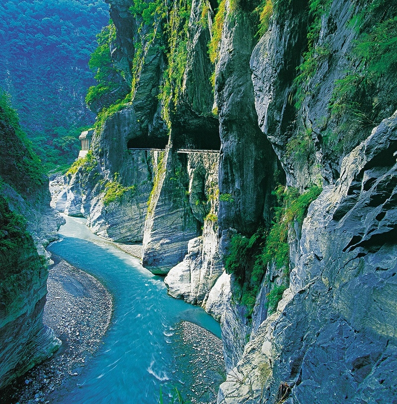
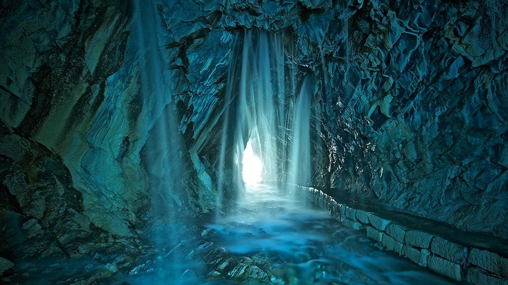
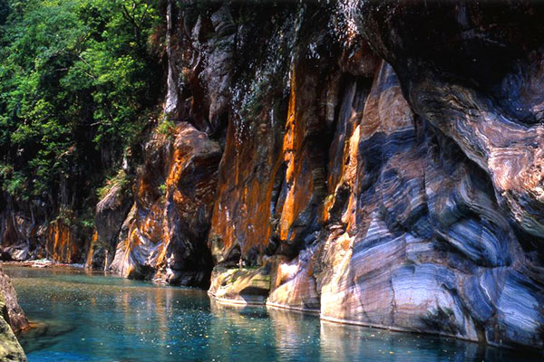
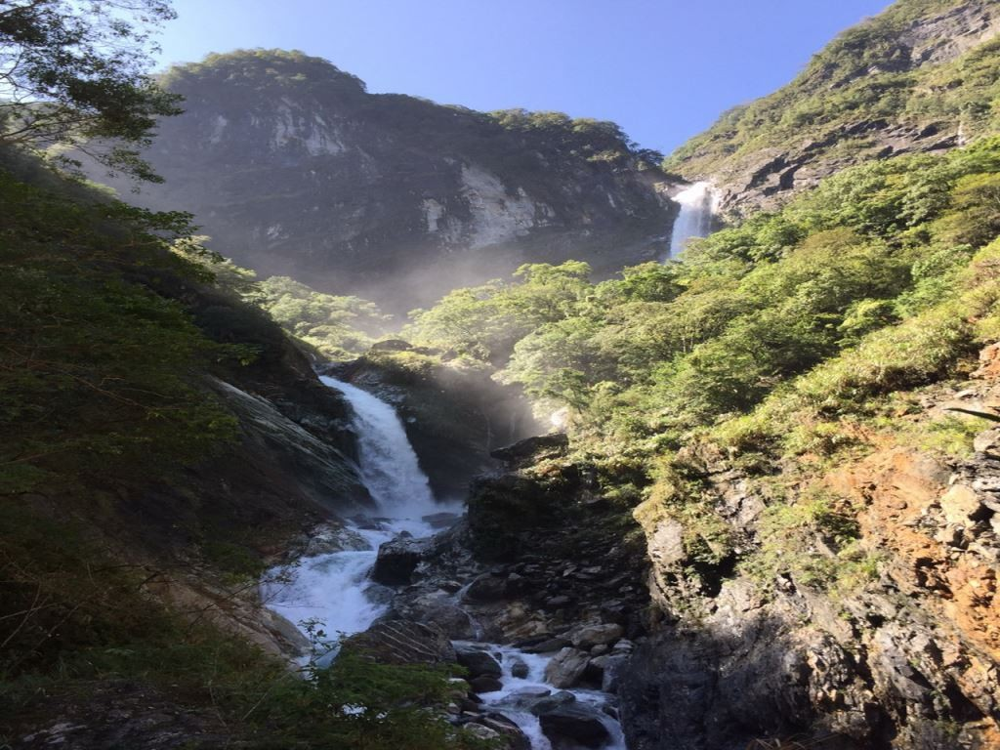

太魯閣國家公園以雄偉壯麗、幾近垂直的大理岩峽谷景觀聞名。沿著立霧溪的峽谷風景線而行，觸目所及皆是壁立千仞的峭壁、斷崖、峽谷、連綿曲折的山洞隧道、大理岩層和溪流等風光。
瀑布是太魯閣國家公園重要的景觀，從太魯閣口到文山間，瀑布相當多，最著名的要屬白楊瀑布、銀帶瀑布、長春瀑布、綠水瀑布等，還有許多不知名的小流瀑。
天祥的風景點有祥德寺、天峰塔、吊橋、文天祥紀念公園、梅園、天祥禮拜堂等。每年冬季，梅園內梅花盛開，梅林從公路、停車場、紀念公園一直延續至祥德寺，連成白色一片花海，是十分受歡迎的臺灣景觀之一。